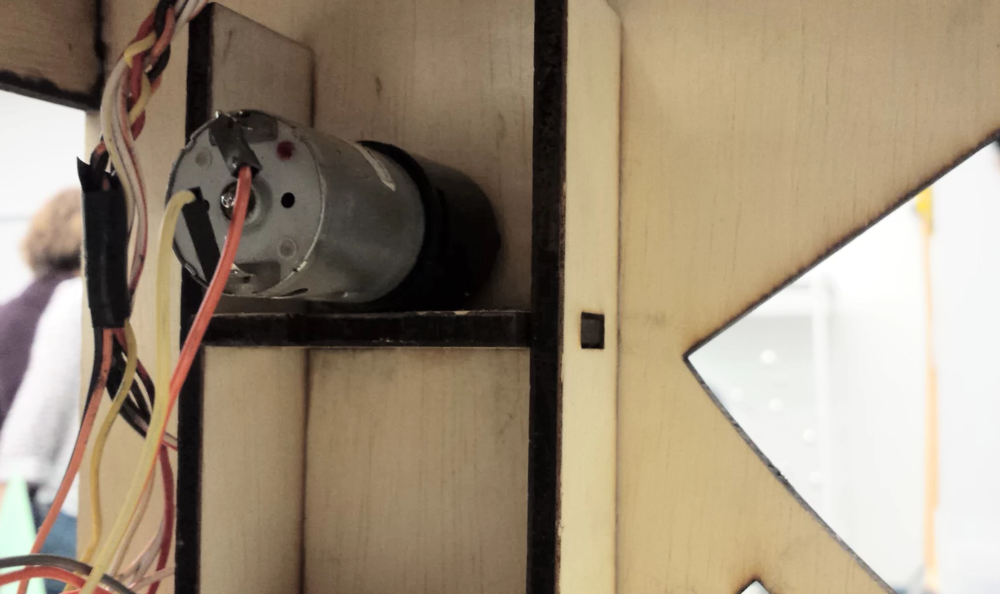
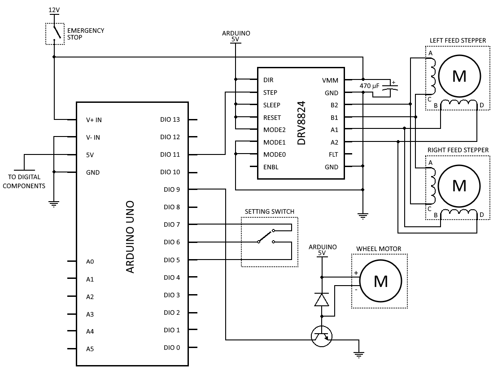

Electrical Design
Feeding Mechanism
For the feeding mechanism, we used two 23Y stepper motors. Stepper motors are useful for this application because they produce very consistent movement, which means that we can ensure our two motors are driving at the same speed without using encoders.
To control our steppers, we used a DRV8825 stepper driver with a Pololu carrier. This chip, and the associated Arduino library, allowed us to control the motors with a single digital pin. The left and right motors were inverted so as to spin in opposite directions.
In addition, our control system utilized microstepping. This means that for every step signal we send to the motors, the motors would move forward - in our case - one sixteenth of a step. This gave us even greater precision over our motors’ speeds and allowed us to more smoothly feed our song sheet through the device.
You can find our Arduino code here.
Marble Recycling
Our marble recycling mechanism used a small but surprisingly high-torque DC motor, controlled by a digital pin on the Arduino.
The Arduino DIO pins, while producing five volts, do not supply any current, so you cannot power even a 5V motor directly from these pins. Instead, we made a simple circuit to act as a motor driver using a diode and a transistor. When the Arduino outputs 5V, the transistor allows current to flow through, and the motor spins. The diode prevents the backward flow of current and keeps the rest of the electronics safe.
You can see our final circuit diagram below:
